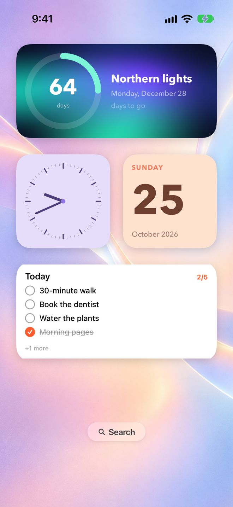
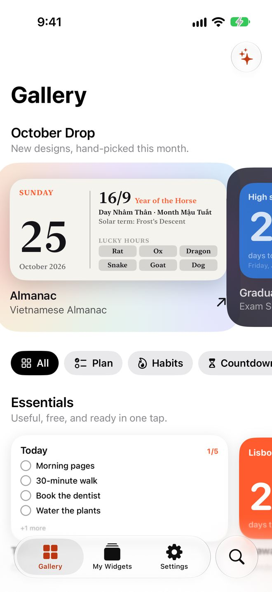
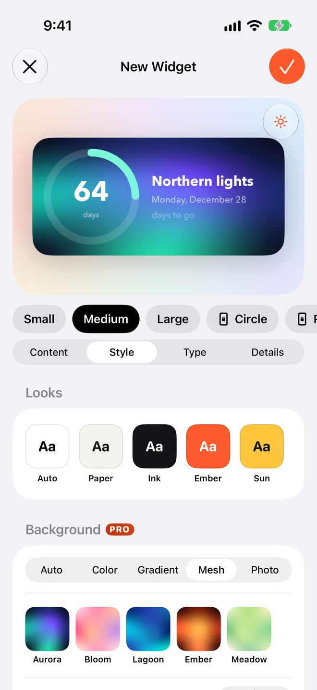
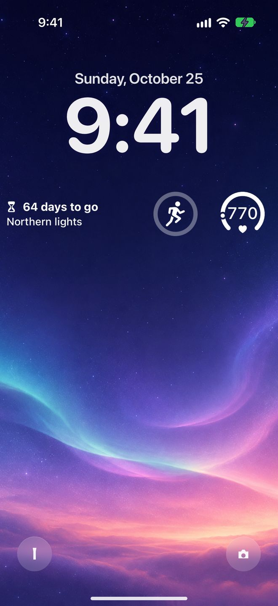

For iPhone and iPad
Widgets you need. Nothing you don’t.
Needgets fills your Home Screen and Lock Screen with beautiful, useful widgets: countdowns, to-dos, habits, calendars with the lunar calendar, clocks, moods, notes and photos. Pick one of 300+ designs, make it yours, and tap it right on the widget.




Everything your Home Screen needs
Nineteen kinds of widget, all in every size and on the Lock Screen.
300+ designs
Hand-made collections for every mood, with a new drop each month. Tap a design to preview it in every size and appearance.
Tap it on the widget
Tick off to-dos, check in a habit, log your mood or count a glass of water, right on your Home Screen.
Countdowns that repeat
Birthdays, trips, exams and holidays, repeating every year, on the lunar calendar or on a weekday like Mother’s Day.
Lunar calendar and almanac
Lunar dates, the year’s stem and branch, lucky hours, solar terms and the next full moon, computed on your device.
Make it yours
Fonts, colours, gradients and photo backgrounds. Every design looks right in Light, Dark, Clear and Tinted.
Private by design
No ads, no account and no tracking. Your widgets stay on your devices and in your own iCloud.
Help
Most answers start on your Home Screen or in Needgets’ Settings tab.
Widgets
How do I add a widget to my Home Screen?
Touch and hold an empty spot on your Home Screen until the apps jiggle, tap Edit, then Add Widget. Search for Needgets, swipe to the size you want and tap Add Widget.
A new widget shows your newest design. To choose another, touch and hold the widget, tap Edit Widget, then Design.
How do I add one to my Lock Screen?
Touch and hold your Lock Screen, tap Customize, then Lock Screen. Tap the row under the time, choose Needgets and pick a size.
Which widgets can I tap?
Checklists (tick a to-do), habits (check in), moods (log today), counters (+ and −), the focus timer (start and stop) and Days Since (reset). Everything else opens Needgets when tapped.
My widget looks blank, faded or out of date.
In the Clear and Tinted Home Screen styles, iOS draws every widget in one tint. Your design keeps its shape and text; colours come back in the Default style. For a photo widget, turn on Keep photo in color in the editor’s Details.
If a widget looks out of date after an update, open Needgets once, then wait a moment: iOS refreshes widgets on its own schedule.
Designs
How do I change a design?
In My Widgets, tap the design. Content, Style, Type and Details hold everything you can change, and the preview shows it in every size. Tap ✓ to save. Widgets on your Home Screen update right away.
Can Needgets show Vietnamese, or the lunar calendar?
Yes. Needgets speaks English and Vietnamese and follows your device unless you choose one in Settings › Language; your widgets switch too. Lunar dates follow the Vietnamese calendar (UTC+7), so Tết and full moons fall as in Vietnamese almanacs.
Needgets Pro
What’s in Pro?
Twenty more font families, custom colours, gradients, mesh gradients, photo backgrounds, borders and patterns, the premium collections and monthly drops, and the counter and focus timer widgets. Everything else is free, forever.
How do the plans work?
Yearly (with a 7-day free trial), Monthly, or Lifetime, a single purchase. Prices are shown in your currency before you buy. Subscriptions renew automatically unless you cancel at least 24 hours before the end of the period, and you can cancel any time.
If Pro ends, your widgets keep working in the nearest free look. They never go blank.
How do I restore or cancel Pro?
To restore on a new device, open the plans screen and tap Restore. To cancel a subscription, open the Settings app, tap your name, then Subscriptions › Needgets.
Your data
How do my designs reach my other devices?
With iCloud. Turn on Settings › iCloud › Sync with iCloud in Needgets and sign in to the same Apple Account on each device. Without iCloud, everything stays on this device.
Can I back up or move my designs?
Yes: Settings › Your Data › Export Backup makes a single file with all your designs, to-dos and streaks. Keep it anywhere, and use Import Backup to bring it back.
How do I delete my data?
Delete a design in My Widgets, or delete the app. To remove the copy in iCloud, open the Settings app, tap your name, then iCloud › Manage Account Storage › Needgets.
Still need help?
Write to us with a question, an idea, or something that isn’t working. If something went wrong, tell us your device and iOS version.